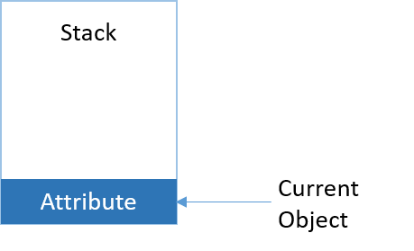
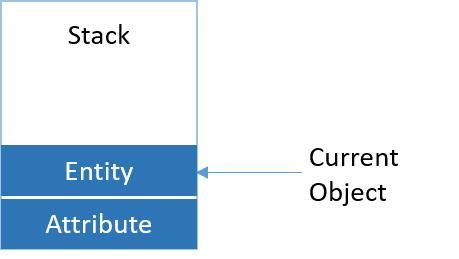

This section contains the following topics
When macros are evaluating, they are generally operating on objects in the model. For example, the Property macro reads the value from a property on the "current" object. This current object is referred to as the context object. Objects become the current object by placing them on the context stack. This is an ordered list that operates in a Last In/First Out manner�objects are added to the list by pushing and removed from the list by popping them.
If you are familiar with erwin Data Modeler's Macro Language, this concept has been present since the earliest days. For example, in erwin Data Modeler r7.2 you could write %ForEachEntity(E_1). This would establish 'E_1' as the current object for subsequent macro calls. Additionally, many macros such as %JoinFKPK or %RelRI would only operate inside certain iterators or editors. This was because they required a certain context stack to be in existence internally.
This concept is simply being exposed more fully now to provide you more control.
As an illustration, suppose the TLX parser is invoked with an Attribute as the starting object. The context stack would have one entry:

Now a macro is used that pushes the Attribute object's owning Entity onto the stack. The stack will now have two entries, with the Entity being the current object.

Now another macro is used that pops the last object from the stack. The stack now reverts to having only the Attribute in it and it is the current object.
Many macros operate upon the current context object. The Property macro is an example of this.
Other macros are capable of operating on objects deeper down the context stack. The PropertyFrom macro is an example of this type.
There are also a variety of macros that push objects onto the context stack and remove them. Macros with the words "Push" and "Pop" in their names are of this variety.
The bottommost (first) object on the stack is known as the anchor object and cannot be popped from the stack. This ensures that macros always have some object as the context. For example, assume that an Entity is the anchor object:
PushOwner /* pushes the model onto the stack */
Pop /* pops the model from the stack */
Pop /* fails - entity is the anchor object */
An object can appear in the stack more than once. If the object happens to be the anchor object, only its earliest appearance cannot be popped�other appearances can be popped at will. For example, assume that an Entity is the anchor object:
PushOwner /* pushes the model onto the stack */
Repush( "1" ) /* pushes entity a second time */
Pop /* pops second occurrence of the entity */
Pop /* pops the model from the stack */
Pop /* fails - entity is the anchor object */
Iteration macros that operate on objects implicitly push the current iteration object onto the stack. This frees you from having to write explicit push and pop macro calls. For example, assume that an Entity is the anchor object:
Property("Name") /* <- reads the entity name */
ForEachOwnee("Attribute")
{
Property("Name") /* <- reads an attribute's name */
}
Property("Name") /* <- back to reading the entity name */
In certain processes in erwin Data Modeler, objects that are not actually in the model are simulated so that they can be used by macros. The most notable example of this situation is when evaluating a TLX template for generating an Alter Script. These objects are referred to as phantom objects. Generally, they can be treated exactly like a regular object. However, certain macros behave differently or do not function when the context object is a phantom object. These situations are noted in the macros' descriptions.